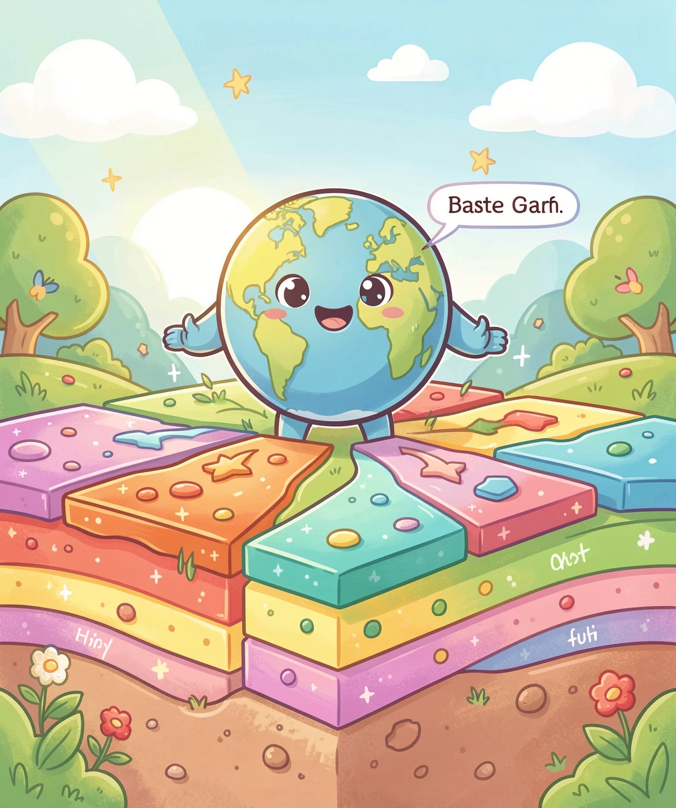
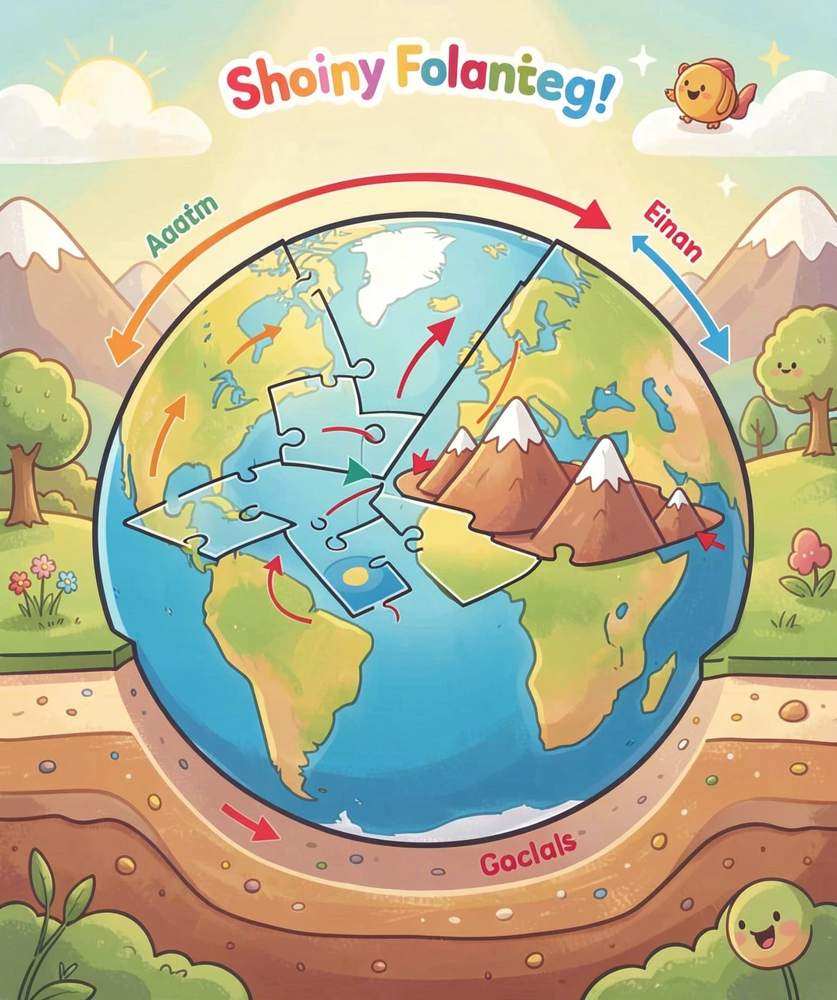
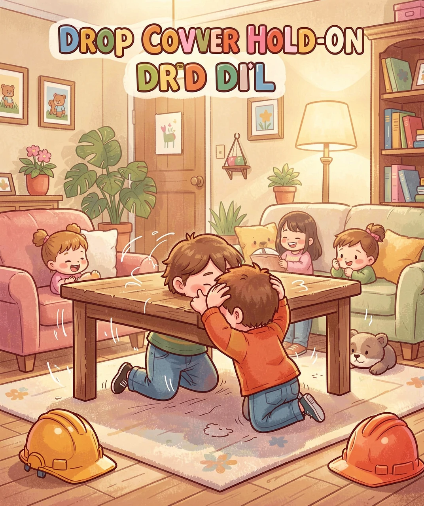
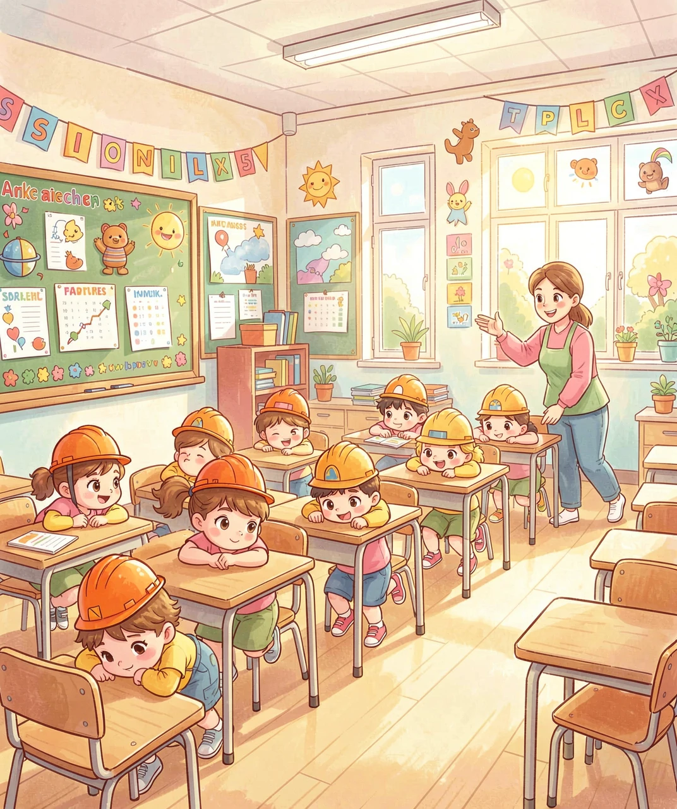

大地在晃动——这不是电影，是真的地震了！别慌，读完这篇文章，你就知道在每一个场景下该怎么保护自己。

我们脚下的地球并不是一整块完整的石头。它像一个打碎的鸡蛋壳，分裂成十几块巨大的"板块"。这些板块一直在缓慢地移动——每年移动几厘米，和你的指甲生长速度差不多！
当两块板块互相挤压、碰撞或错开时，巨大的能量在地底累积。当岩石再也承受不住时——轰！能量瞬间释放，引发地面震动，这就是地震。
震中就是地震发生时地面上正对着地下震源的那个点。离震中越近，晃动越厉害。震级是衡量地震释放能量的数字：每增加1级，能量增加约32倍！5级地震已经能让家具晃动了，8级地震能摧毁整座城市。

从你感觉到地面开始晃动，到最强烈的震动袭来，大约有12秒的预警时间。这12秒就是你的"黄金逃生窗口"！
1蹲下（Drop）——立刻蹲下，降低重心
2掩护（Cover）——钻到结实的桌子下面，双手护住后颈和头
3抓牢（Hold On）——一手抓住桌腿，直到晃动停止
这就是国际通用的「蹲下·掩护·抓牢」三步骤！


每个家庭都应该有一个随手能拿到的应急包，记住这个清单：
| 类别 | 物品 | 为什么需要 |
|---|---|---|
| 💧 饮水 | 瓶装水（每人3升/天×3天） | 震后水管可能断裂 |
| 🍞 食物 | 压缩饼干、罐头（自加热更好） | 不用开火也能吃 |
| 🔦 照明 | 手电筒+备用电池 | 震后常断电 |
| 🏥 急救 | 创可贴、碘伏、绷带、常用药 | 小伤口自己处理 |
| 📻 通讯 | 手摇发电收音机 | 没网没电也能听消息 |
| 🧥 保暖 | 急救毯（轻便反光那种） | 防止失温 |
| 📝 重要 | 家人联系方式+血型卡片 | 救援人员需要这些 |
答完5题，你就是家庭安全小卫士👇
1. 在家遇到地震，正确的三步是什么？
A) 跑、喊、跳 B) 蹲下、掩护、抓牢 C) 站直、拍照、发朋友圈 D) 开窗、跳楼、求救
✅ B) 蹲下·掩护·抓牢！国际通用黄金三步骤
2. 地震时在楼上，应该怎么跑？
A) 冲进电梯 B) 从窗户跳下去 C) 等震动停止后走楼梯 D) 站在阳台上看热闹
✅ C) 等震动停止后走楼梯——千万不要乘电梯！
3. 地震震级每增加1级，能量大约增加多少倍？
A) 2倍 B) 10倍 C) 32倍 D) 100倍
✅ C) 约32倍！5级和8级之间差了约32000倍能量
4. 在海边感觉强烈地震后，应该怎么办？
A) 跑海边看海浪 B) 立刻往高处跑 C) 发完朋友圈再说 D) 等手机收到海啸警报
✅ B) 立刻往高处跑！海啸有时几分钟就到，等警报来不及
5. 应急包里最不该放什么？
A) 瓶装水 B) 手电筒 C) 游戏机 D) 急救毯
✅ C) 游戏机！应急包要放生存必需的物品，不是玩具
🏠 安全不是运气，是准备出来的！
今天就和爸爸妈妈一起：
🔍 找出家里最安全的角落（结实的桌子下面）
🎒 动手做一个家庭应急包
📋 制定一条逃生路线并演练一次
记住：蹲下·掩护·抓牢——这三个字能救命！
🏠 返回首页